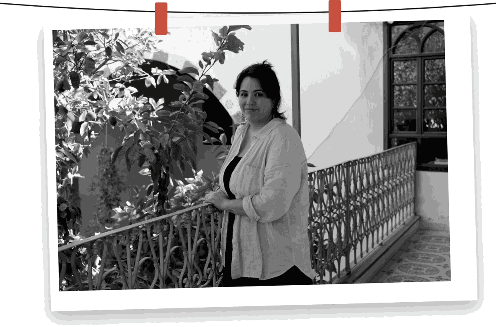

Aboutعن النادي
The Image Club is a photography and creative initiative being developed in Damascus. Envisioned as a shared space for photographers, it will bring together facilities, equipment, resources and a community to support learning, experimentation and creative practice.نادي الصورة وجهة للتصوير الفوتوغرافي والاستكشاف الإبداعي في دمشق، يجري العمل على تطويرها لتكون مساحة مشتركة تجمع المصوّرين، وتتيح لهم الوصول إلى المعدّات والموارد، والتعلّم والتجربة والإبداع معًا.

Founded by Luma Darwish, a Syrian-Canadian photographer and visual artist, the project grew from her search for a place where her cultural identity and passion for photography could thrive. The Image Club is an extension of that vision: creating a sense of belonging for photographers in Damascus.تأسّس النادي على يد لُمى درويش، مصوّرة وفنّانة بصرية سورية-كندية. وانطلقت فكرته من رحلتها الشخصية في البحث عن مساحة يلتقي فيها الانتماء الثقافي والشغف بالتصوير، لتسعى إلى خلق مساحة مماثلة للمصوّرين في دمشق.
Our Missionرسالتنا
To develop a shared, membership-based photography space in Damascus where photographers can practise, experiment, learn and develop their work across analogue and digital photography.تطوير مساحة مشتركة قائمة على العضوية، تتيح للمصوّرين ممارسة التصوير الأنالوغ والرقمي، والتجربة والتعلّم وتطوير أعمالهم. ومن خلال المعدّات والموارد والورشات وتبادل المعرفة، نسعى إلى توسيع فرص الوصول إلى أدوات الإبداع، ودعم المصوّرين السوريين في تطوير أعمالهم ومشاركتها.
Through shared facilities, equipment, workshops and knowledge exchange, we aim to expand access to creative resources, support Syrian photographers and create opportunities for their work to grow and be seen.
Our Visionرؤيتنا
To become a leading destination for photography in Syria and a meeting point connecting photographers and photographic communities across the region.أن يصبح نادي الصورة وجهة رائدة للتصوير الفوتوغرافي في سوريا، ونقطة التقاء تربط المصوّرين ومجتمعات التصوير في المنطقة.
We envision a thriving photography community where local talent is nurtured, creative practices are shared, and photographers have greater opportunities to create, collaborate and showcase their work.
A place to create. A space to belong.مساحة للإبداع. مساحة للانتماء.